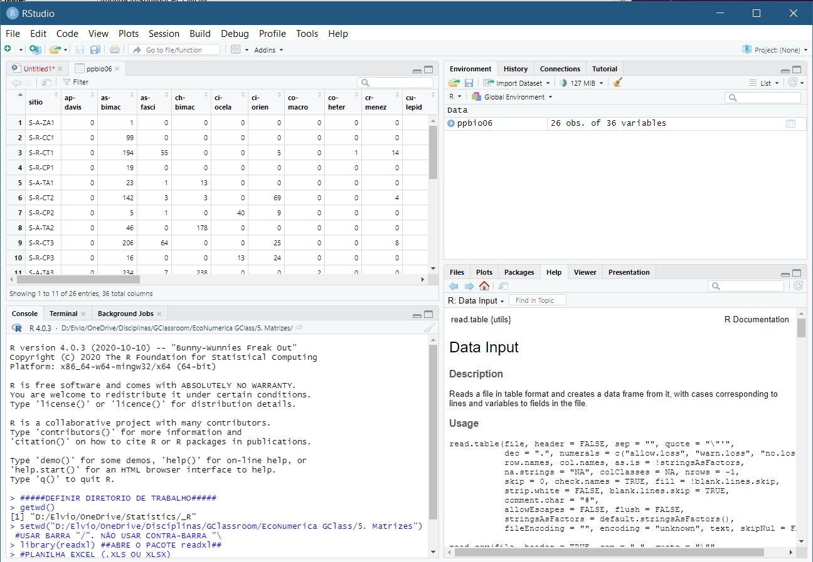
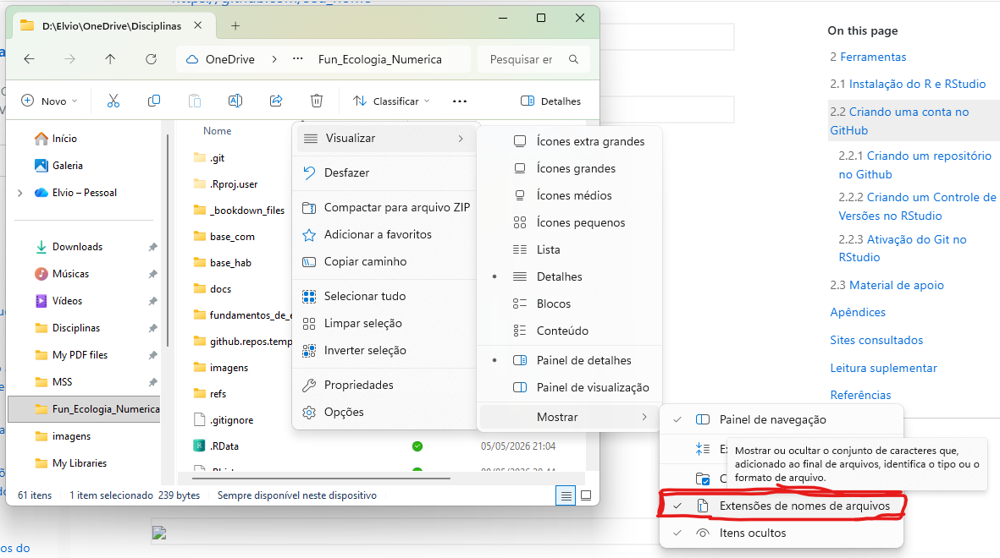

3 Introdução ao R/RStudio
RESUMO
LEGENDRE; LEGENDRE (1998) alertam o ecologista numérico sobre as armadilhas do uso de computadores - que a computabilidade não garante (i) que os dados satisfaçam o método e (ii) que os resultados sejam interpretados corretamente em termos ecológicos. A isso, infelizmente, deve ser adicionada a advertência adicional de que os computadores não negam a necessidade de verificar a exatidão dos cálculos.
A conclusão desta disciplina ajudará a evitar essas armadilhas, fornecendo a você as habilidades para aplicar essas técnicas com sucesso para o avanço da ciência e do gerenciamento de nossos recursos naturais. Espero que com a conclusão dessa disciplina o aluno possa evitar essas armadilhas e possua as habilidades para aplicar essas técnicas com sucesso para avançar na sua área de atuação.
3.1 Pré-requisitos
Familiaridade básica com computadores, tipos de arquivos (.xlsx, .docx, etc), processadores de texto e planilhas é necessária aqui. Espera-se que você seja capaz de compreender estatísticas univariadas básicas.
3.2 Principais conceitos
3.2.1 O ambiente de programação do R
O programa R oferece uma poderosa ferramenta para manipulação, análise e visualização de dados, e nos últimos anos tornou-se muito popular entre os ecologistas (e não apenas eles). Ele oferece grande liberdade e permite que você faça o que quiser com seus dados, o que não é o caso de softwares clicáveis como SAS, SPSS ou STATISTICA, entre outros. No entanto, ele também surge com uma curva de aprendizado íngreme, tendo em vista sua linguagem baseada em S/S-Plus, e um certo nível de frustração por conta de mensagens de erro frequentes. A menor imprecisão na digitação do código impede que ele seja executado, e gasto de tempo na busca do erro. Isso, em parte, estimula a “copia-cola” de scripts prontos, levando o usuário a executar analises sem saber o que está fazendo. Exceto pelo livro de Jean Valentin (VALENTIN, 2000), a grande maioria dos textos impressos em ecologia numérica são em inglês. Assim como inúmeros tutoriais em inglês pela internet (veja Introduction to R for Ecologists de David Zelený. Em português temos o excelente livro on-line Análises Ecológicas no R de SILVA et al. (2022).
O R não é um software do tipo aplicativo, é um ambiente de programação com um conjunto integrado de ferramentas de software para manipulação de dados, cálculo e apresentação gráfica. A linguagem R foi elaborada inicialmente com o objetivo específico de análises de dados, na qual muitas técnicas estatísticas, clássicas e modernas, podem ser implementadas, entre outras coisas não tão estatísticas. Algumas dessas técnicas estão implementadas no ambiente básico do R (“R base”), mas muitas estão implementadas em pacotes adicionas (“packages”).
O ambiente R foi desenvolvido baseado na linguagem S, no final da década de 90 início dos anos 2000. A sua estrutura de código aberto (que vem da linguagem S) e de software público e gratuito atraiu um grande número de desenvolvedores, sendo que há hoje inúmeros pacotes para o R (veja Introdução ao R para Análise de Dados em Consultoria Ambiental).
Para um excelente minicurso introdutório sobre o R clique aqui.
“Uma das coisas mais importantes que você pode fazer é dedicar um tempo para aprender uma linguagem de programação de verdade [e aprender a base teórica e estatística]. Aprender a programar é como aprender outro idioma: exige tempo e treinamento, e não há resultados práticos imediatos. Mas se você supera essa primeira subida íngreme da curva de aprendizado, os ganhos como cientista são enormes. Programar não vai apenas livrar você da camisa de força dos pacotes estatísticos, mas também irá aguçar suas habilidades analíticas e ampliar os horizontes de modelagem ecológica e estatística.”
— (Nicholas J. Gotelli em GOTELLI; ELLISON (2011))
Os softwares disponíveis para análise multivariada são diversificados. A maioria dos pacotes tem algumas das análises padrão, mas o R é necessário para fazer o melhor uso dos recentes avanços em aplicações ecológicas. A literatura, por outro lado, alerta o ecologista numérico para as armadilhas do uso de computadores. A computação não garante (i) que os dados satisfaçam o método, e (ii) que os resultados sejam interpretados corretamente em termos ecológicos. Para isso, é necessária uma base teórica forte além de que os computadores não negam a necessidade de verificar a correção dos cálculos. Uma das ferramentas mais populares para análise de dados no R é o RStudio, uma interface de desenvolvimento integrada (IDE) que oferece recursos avançados para desenvolvimento, depuração e gerenciamento de projetos em R. Embora o RStudio seja uma ferramenta poderosa para análise de dados, é importante lembrar que a análise multivariada não depende apenas do software utilizado, mas também de uma base teórica forte e de verificação da correção dos cálculos. Além disso, a literatura alerta que o uso de computadores não garante a adequação dos dados ao método e a interpretação correta dos resultados em termos ecológicos. Portanto, é importante combinar o uso de ferramentas como o RStudio com uma sólida formação teórica e verificação rigorosa dos resultados.
3.3 O que é o R Studio?
O RStudio é um ambiente integrado de desenvolvimento (IDE) para a linguagem de programação R, projetado para ajudar os usuários a trabalhar com dados de forma mais eficiente e produtiva (Figura 3.1). Ele oferece uma ampla variedade de recursos e ferramentas para análise de dados, incluindo edição de código, visualização de gráficos, depuração, gerenciamento de projetos e colaboração. O RStudio é gratuito e de código aberto, disponível para Windows, Mac e Linux, e é usado por uma comunidade crescente de cientistas de dados, pesquisadores, analistas e desenvolvedores em todo o mundo. Ele oferece suporte para várias bibliotecas e pacotes do R, incluindo o tidyverse, que é uma coleção popular de pacotes para manipulação de dados e visualização. Com o RStudio, os usuários podem facilmente importar, manipular e visualizar dados, executar análises estatísticas e criar visualizações gráficas interativas. Além disso, o RStudio oferece a possibilidade de publicar relatórios e apresentações dinâmicas em diversos formatos, como HTML, PDF e Word, facilitando a comunicação e colaboração entre os usuários.

Figura 3.1: Interface do usuário do ambiente integrado de desenvolvimento (IDE) RStudio para a linguagem de programação R.
3.3.1 Licença de software
A licença de uso do RStudio depende da versão do software que está sendo utilizada. O RStudio oferece duas versões principais: a versão gratuita e a versão paga, conhecida como RStudio Pro. A versão gratuita do RStudio é licenciada sob a licença AGPLv3, o que significa que é um software de código aberto e livremente distribuível. Isso permite que os usuários baixem, modifiquem e distribuam o código-fonte do RStudio gratuitamente. No entanto, o uso comercial do RStudio sob a licença AGPLv3 pode ter algumas limitações, como a obrigatoriedade de disponibilizar o código-fonte modificado para os usuários. Já a versão paga do RStudio, o RStudio Pro, requer uma licença comercial para uso em ambientes empresariais ou acadêmicos. A licença comercial do RStudio Pro oferece recursos adicionais, como suporte técnico e atualizações regulares do software. Além disso, a licença comercial permite que os usuários utilizem o RStudio Pro em um ambiente sem a obrigação de divulgar o código-fonte modificado. É importante lembrar que as licenças de uso do RStudio podem mudar com o tempo, portanto, é recomendado que os usuários verifiquem as informações de licenciamento diretamente no site do RStudio antes de utilizar o software.
3.3.2 R base vs. RStudio
O RStudio oferece diversas vantagens em relação ao uso do R base. Algumas dessas vantagens incluem:
- Interface amigável: o RStudio possui uma interface gráfica amigável e intuitiva, com recursos como realce de sintaxe, sugestões de código e facilidade na navegação entre arquivos, o que torna o processo de desenvolvimento mais fácil e produtivo.
- Facilidade de gerenciamento de projetos: o RStudio oferece ferramentas para gerenciamento de projetos, que permitem aos usuários organizar e controlar arquivos e scripts em um ambiente centralizado.
- Depuração eficiente: o RStudio oferece recursos de depuração integrados, como pontos de interrupção e rastreamento de variáveis, que facilitam a identificação e correção de erros no código.
- Suporte para colaboração: o RStudio permite que múltiplos usuários colaborem em um projeto, com recursos como controle de versão integrado e ferramentas para compartilhamento de código.
- Integração com outras ferramentas: o RStudio integra-se com diversas ferramentas populares de análise de dados, como o Git e o LaTeX, permitindo uma maior eficiência e produtividade no processo de análise e geração de relatórios.
Essas são apenas algumas das vantagens que o RStudio oferece em relação ao R. É importante notar que, embora o RStudio seja uma ferramenta poderosa para análise de dados, ele não substitui a necessidade de conhecimento em R e estatística para obter resultados precisos e significativos.
3.4 O essencial
3.4.1 Interface do usuário
Uma interface de programa estatístico é uma ferramenta que permite que os usuários interajam com uma linguagem de programação de maneira mais amigável e visual. Essas interfaces geralmente apresentam uma interface gráfica do usuário (GUI) que oferece um ambiente integrado para a análise de dados. Os usuários podem importar dados, criar visualizações, executar análises estatísticas e gerar relatórios. As interfaces de programa estatístico podem variar desde aplicativos de desktop autônomos até plug-ins para aplicativos de planilha, e muitos são desenvolvidos para atender a necessidades específicas de usuários em áreas como finanças, pesquisa médica, ciências sociais e outras. Essas interfaces tornam a análise de dados mais acessível a uma gama mais ampla de usuários, independentemente de sua experiência em programação ou estatística.
Linguagens de programação estatística de código aberto tem sido amplamente usadas em análises de dados e pesquisa em todo o mundo. Suas interfaces ou GUIs, embora poderosas, podem ser um pouco intimidadoras para novos usuários, uma vez que é necessário habilidades de programação básicas.
3.4.2 Interface do usuário do RStudio
A interface de usuário do RStudio é composta por várias janelas e painéis que permitem a interação com o R de forma organizada e intuitiva. A janela principal é dividida em quatro painéis (Figura 3.2):

Figura 3.2: Interface do usuário do ambiente integrado de desenvolvimento (IDE) RStudio para a linguagem de programação R com os termos em inglês e em português. O operador de atribuição ( <- ), um dos operadores mais utilizados no R pode ser chamado pela combinação alt + - (alt e a tecla menos).
Editor de código: é onde o usuário pode criar, editar e salvar scripts R. O editor fornece recursos como destaque de sintaxe, indentação automática, autocompletar e outras ferramentas úteis para a programação.
Console: é onde o usuário pode digitar comandos diretamente no R e ver a saída correspondente. É aqui que a maior parte da interação com o R ocorre.
Arquivos/Plots/Pacotes/Ajuda: este painel pode ser dividido em quatro subpainéis, cada um dos quais mostra uma guia diferente. O painel de arquivos permite a navegação pelos arquivos e pastas do computador. O painel de plots mostra gráficos gerados no R. O painel de pacotes permite a instalação, atualização e carregamento de pacotes do R. O painel de ajuda exibe informações sobre funções e pacotes do R.
Ambiente/Histórico/Git/Conexões: este painel também pode ser dividido em quatro subpainéis. O painel de ambiente exibe informações sobre variáveis e funções criadas no R. O painel de histórico mostra os comandos recentes digitados no console. O painel de Git permite que o usuário integre o RStudio com um repositório Git para controle de versão. O painel de conexões permite a conexão com bancos de dados e outros recursos externos.
A interface de usuário do RStudio também inclui uma barra de ferramentas na parte superior da janela, que fornece acesso rápido a comandos e recursos comuns. Além disso, há uma barra de menus padrão que permite o acesso a todas as opções e recursos do RStudio. No geral, a interface de usuário do RStudio é altamente personalizável e pode ser configurada para atender às necessidades específicas do usuário.
3.5 Mensagens de erro e avisos no R
No contexto da linguagem de programação R, mensagens de erro (errors) e mensagens de aviso (warnings) que aparecem em vermelho no painel de console. Elas são formas de feedback do sistema que indicam problemas ou situações potencialmente problemáticas durante a execução do código. Aqui está uma breve explicação de cada um:
-
Erro (Error):
- Um erro ocorre quando algo no código não está correto ou não pode ser executado como esperado.
- Isso pode ser causado por sintaxe incorreta, uso incorreto de funções, operações inválidas, referências a objetos que não existem, entre outros problemas.
- Quando ocorre um erro, a execução do código é interrompida e uma mensagem de erro é exibida no console em vermelho, indicando o tipo de erro e, muitas vezes, a linha onde ocorreu.
-
Aviso (Warning):
- Não indica erro. Um aviso é emitido quando algo no código pode resultar em um comportamento indesejado ou em resultados inesperados, mas não interrompe necessariamente a execução do código.
- Os avisos geralmente indicam situações que merecem atenção, como conversões de tipos de dados que podem perder informações ou funções que estão sendo usadas de maneira que pode levar a resultados questionáveis.
- Os avisos são exibidos em vermelho no console e fornecem informações sobre a natureza do aviso e, possivelmente, como abordá-lo.
É importante prestar atenção a mensagens de erro e avisos, pois eles fornecem insights sobre problemas em seu código ou potenciais fontes de comportamento inesperado. Resolver erros é fundamental para que o código funcione conforme o esperado. Embora os avisos não interrompam a execução, investigá-los pode ajudar a evitar problemas futuros ou melhorar a qualidade do código.
3.6 Prefira sempre códigos e scripts do que mouse e menus de janelas no R
Optar pelo uso de scripts e comandos de teclado no R, em vez das opções baseadas em mouse e menus das janelas, oferece várias vantagens significativas para quem está envolvido em análises de dados e programação. Aqui estão algumas justificativas para essa abordagem:
Reprodutibilidade: O uso de scripts permite que todas as etapas de análise e manipulação de dados sejam documentadas em um único lugar. Isso facilita a reexecução de todo o processo, tornando a análise reprodutível e permitindo que outras pessoas compreendam e validem o trabalho realizado.
Automação: Comandos de script podem ser facilmente repetidos ou adaptados para diferentes conjuntos de dados. Isso possibilita a automação de tarefas complexas, economizando tempo e reduzindo a possibilidade de erros manuais.
Flexibilidade: Enquanto as opções de mouse e menus podem ser limitadas em termos das ações específicas que permitem, os scripts oferecem uma flexibilidade muito maior. Você pode personalizar cada etapa do processo de análise de acordo com suas necessidades específicas.
Eficiência: A digitação de comandos é geralmente mais rápida do que navegar por menus e clicar em botões, especialmente quando se trata de tarefas repetitivas e/ou complexas.
Controle total: Ao utilizar scripts, você tem controle total sobre cada etapa do processo. Isso é particularmente importante em análises estatísticas, onde pequenas variações nos parâmetros podem ter um grande impacto nos resultados.
Aprendizado contínuo: Escrever e modificar scripts permite um maior aprendizado e domínio da linguagem R. Conforme você ganha experiência, poderá realizar análises mais sofisticadas e explorar recursos avançados.
Portabilidade: Scripts podem ser facilmente compartilhados com outros pesquisadores ou colegas, independentemente do sistema operacional utilizado. Isso torna a colaboração mais fluida e ajuda a evitar problemas de compatibilidade.
Melhor entendimento: Ao escrever e ler scripts, você desenvolve uma compreensão mais profunda dos processos que está realizando. Isso é importante para identificar possíveis erros e interpretar corretamente os resultados.
Documentação clara: Ao escrever um script, você pode adicionar comentários explicativos que descrevem cada passo e sua lógica. Isso resulta em uma documentação clara e autoexplicativa do trabalho realizado.
Consistência: O uso de scripts promove a adoção de práticas consistentes em toda a análise, reduzindo a chance de erros causados por abordagens diferentes em momentos distintos.
Em resumo, a abordagem baseada em scripts e comandos de teclado oferece mais controle, flexibilidade, eficiência e reprodutibilidade, tornando-a a escolha preferida para profissionais que buscam análises de dados precisas, consistentes e de alta qualidade no ambiente R.
3.7 O que é um script e qual sua diferença para um código?
Em programação R, tanto “código” quanto “script” se referem a sequências de instruções escritas na linguagem de programação R (veja também Snippet e chunk). No entanto, há uma diferença sutil em como esses termos são geralmente usados:
- Código:
Em R, “código” geralmente se refere a linhas individuais ou blocos de instruções de programação R que realizam tarefas ou operações específicas. O código pode ser escrito de forma interativa em um console R ou dentro de um arquivo de script. O código pode consistir em declarações simples, como atribuir valores a variáveis, realizar cálculos, definir funções ou chamar funções de pacotes.
- Script:
Um “script” em R refere-se a um arquivo contendo uma série de instruções de código R. Scripts R são essencialmente arquivos de texto contendo uma sequência de comandos e declarações R que podem ser executados em conjunto. Os scripts R permitem que os usuários organizem seu código em unidades reutilizáveis e estruturadas. Os scripts R geralmente têm a extensão de arquivo “.R”.
Em resumo, enquanto “código” se refere a instruções individuais de programação R, “script” se refere a um arquivo contendo uma coleção de código R, geralmente usado para executar tarefas ou análises maiores de forma estruturada e organizada.
3.7.1 Projetos
Um ‘Projeto’ no RStudio é um conjunto de dados e arquivos de resultados associados entre si, junto com as opções e configurações no momento em que o Projeto foi salvo pela última vez. Quando você abre um projeto, esses arquivos são abertos e suas opções e configurações são restauradas da última vez. Você só pode ter um projeto aberto por vez, mas pode alternar facilmente entre eles abrindo um projeto salvo. Um projeto pode ter mais de um arquivo de dados associado. Se você tiver um projeto aberto e abrir ou criar qualquer arquivo nele, o projeto será considerado modificado. Ao sair do RStudio ou abrir um novo projeto, será perguntado se deseja salvar o projeto modificado. Para melhor gerenciamento de dados, você pode manter seus arquivos de projeto em seus próprios diretórios, separados do software RStudio. Ele lembra o nome do caminho completo para cada projeto. Os detalhes de como o RStudio gerencia diretórios e definições de gerenciamento de arquivos são fornecidos no sistema de Ajuda. Você pode redefinir o diretório padrão (working directory) para que o RStudio navegue até o diretório que você escolheu e abra os arquivos ou projetos que você encontrará no diretório escolhido.
3.7.2 Nomes de arquivos
Alguns dos tipos de extensão de arquivos que podem ser criados ou manipulados no RStudio incluem:
● Arquivos de script: São arquivos de texto contendo código R, com extensões de arquivo como .R, .Rmd, .Rnw, .Rhistory, entre outros.
● Arquivos de dados: São arquivos contendo dados que podem ser lidos e manipulados com o R, como .csv, .txt, .xls, .xlsx, .rda, .rdata, entre outros.
● Arquivos de pacotes: São arquivos compactados que contêm código, documentação e dados necessários para um pacote do R, com extensão .tar.gz.
● Arquivos de imagem: São arquivos de imagem gerados a partir de gráficos criados no R, com extensões como .pdf, .png, .jpeg, .bmp, entre outros.
● Arquivos de projeto: São arquivos que contêm todas as informações necessárias para reproduzir um projeto R, incluindo arquivos de script, dados e outros recursos, com extensão .Rproj.
Esses são apenas alguns dos tipos de arquivos que podem ser usados ou gerados no RStudio. O RStudio também oferece suporte a muitos outros tipos de arquivos, como arquivos de ajuda, arquivos de instalação de pacotes, entre outros.
3.8 Preparação dos arquivos
Arquivos de dados multivariádos são geralmente maiores e mais complexos do que outros, portanto, é necessário cuidado extra. Eles podem ser preparados de duas maneiras principais. A primeira forma é como a matriz completa de valores (.xlsx), onde cada linha mostra os valores de cada coluna. Isso é bom quando há poucos zeros. É assim que uma planilha funciona. A outra maneira, preferida pelos ecologistas para seus dados de espécies, é registrar apenas os valores diferentes de zero para cada espécie. Cada linha, representando uma unidade de amostragem, é então lida como uma lista de verificação ou registro quadrat. Este formato compacto (.csv ou tab delimited) é muito mais eficiente quando o tamanho da matriz de dados é muito grande. O RStudio considera as linhas no arquivo de dados como as unidades de amostragem e as colunas como as variáveis. Dependendo de quantos existem, pode ser mais conveniente inserir seus dados ao contrário e, em seguida, transpô-los para o RStudio. Veremos como fazer isso mais tarde.
3.8.1 Visualizar extenções de arquivos
Se você não está vendo as extensões (tipos de arquivos) no seu computador, siga os passos a seguir (no Windows 11) ou faça os ajustes para sua versão de Sistema Operacional.
No Windows Explorer (Explorador de Arquivos), clique no menu Visualizar no topo (se não estiver visivel, clique nos três pontinhos ...), escolha a opção Mostrar e selecione Extensões de nomes de arquivos.
Como alternativa, no Explorador de Arquivos, clique no menu de três pontos (...) > Opções > guia Modo de Exibição, depois desmarque Ocultar extensões para tipos de arquivo conhecidos.

3.8.2 Formatos de arquivo de dados
Você pode usar qualquer editor de texto, processador de texto ou planilha para construir sua planilha de dados, embora seja recomendado o uso do Excel. No entanto, a entrada de dados no RStudio deve ser feita dentro do ambiente R por linha de comando. Os dados podem ser preparados no formato de planilha (spreadsheet), mas você deve seguir o formato cuidadosamente para saber onde e como colocar as informações nas células da planilha.
A seguir é apresentada a estrutura básica de uma matriz comunitária e como importar um arquivo XLS/XLSX para o RStudio usando a programação R (Figura 3.3). Como tudo no R, existem várias formas para se ler os arquivos Excel. Usaremos primeiro pacote readxl (que já vem instalado com o R base) (veja https://www.tutorialkart.com/r-tutorial/r-read-excel-xls-xlsx/)

Figura 3.3: Usaremos uma matriz multivariada (sítios x espécies, matriz comunitária) do PPBio. Identifique na figura abaixo os elementos que compõem uma matriz multivariada
3.8.3 O arquivo de espécies
Ao usar o formato de dados compacto, você viu que as variáveis (colunas) são numeradas, não nomeadas. Portanto, para aplicar um nome a eles, você precisa criar um arquivo de texto separado que contenha os códigos e nomes. Isso é mais útil quando as variáveis são espécies, uma vez que você pode ter um único arquivo de espécie que se aplica a todos os seus arquivos de dados e aos projetos.
O arquivo de espécies também inclui o nome completo da espécie, que é usado em alguns arquivos de resultados. Esta facilidade é obviamente muito útil para registro de campo quando você pode identificar a maioria das espécies. Leve a lista de espécies com você e apenas escreva o número do código em sua folha de dados. Observe também os seguintes guias de formato e regras para o arquivo de espécies.
● Nomes de código curtos são recomendados para reduzir a superimposição de nomes em quaisquer resultados gráficos.
● Os registros podem estar em qualquer ordem neste arquivo. (No entanto, você achará útil manter as espécies em ordem alfabética porque a maior parte dos outputs é ordenada pela sequência de espécies em seu arquivo de espécies.).
3.8.4 Formato de valores separados por vírgula (.csv)
Um arquivo ASCII de valores separados por vírgula (formato *.csv) também pode ser usado para importar / exportar dados do RStudio. Este formato de arquivo requer uma formatação muito cuidadosa.
3.8.5 Editando a matriz de dados
O RStudio fornece uma pletora de formas para edição de matrizes. Isso é mais útil para pequenas correções. Essas edições são salvas no formato de planilha para que você possa alternar entre a edição do arquivo e o software de planilha. Use a planilha para uma edição mais extensa de suas matrizes. Você pode fazer operações do tipo matriz facilmente na janela principal. A exclusão de linhas ou colunas, transformações e transposição e multiplicação de matrizes estão disponíveis com linhas de comando.
3.8.6 Arquivos de resultados
Para manter um registro completo de suas análises, é melhor anexar arquivos de resultados sucessivos a um arquivo de scripts nomeado. Faça isso salvando o arquivo de resultado e, então, após cada operação sucessiva, selecione Salvar script. Você também deve adquirir o hábito de inserir um título descritivo significativo (usando #) para cada análise. Isso fornece documentação adicional de sua análise e aparece no script. As tabelas no arquivo de resultado são construídas com espaços, não tabulações. Portanto, o alinhamento das colunas no RStudio e nos processadores de texto só é obtido selecionando uma fonte de pitch-fixo, como Courier. Sendo arquivos de texto simples, você também pode pesquisar ou editar arquivos de resultados e scripts usando o R ou qualquer editor de texto.
Você pode exportar seus arquivos de resultado para sua planilha.
3.8.7 Gráficos
Você pode salvar imagens gráficas do RStudio como metarquivos do Windows (.wmf) ou metarquivos aprimorados (*.emf), usando linhas de comando ou a interface gráfica. Um gráfico salvo dessa forma é uma imagem vetorial que pode ser aberta em um pacote gráfico ou colada em processadores de texto e redimensionada ou editada sem perda de detalhes. No entanto, certifique-se de não alterar a proporção de aspecto ao redimensionar. Se o formato *.emf não for lido corretamente por seu outro software, tente salvar o gráfico no formato .wmf.
3.9 Conclusão
Foram apresentadas as três primeiras etapas da sequência abaixo, incluindo a preparação da importantíssima matriz de dados e como importá-la e exportá-la. Resumir os dados e decidir sobre o tratamento dos valores ausentes é um primeiro passo para a familiarização com conjuntos de dados multivariados.
3.10 Sequência típica na preparação e análise de dados
Para realizar uma análise multivariada, precisamos seguir uma sequência de etapas analíticas, como a seguir:
Entrada de dados e verificação de erros
Crie os arquivos de dados e espécies usando sua planilha ou editor de texto ou banco de dados. Verifique e arquive uma cópia do seu arquivo de dados limpo.Crie o arquivo de planilha .xlsx
Faça isso salvando a planilha ou importando outros formatos para o RStudio. Verifique se há erros de importação. Faça resumos para reproduzir seus registros de unidade de amostragem para dupla verificação.Examine a estrutura básica dos dados
Use os comandos de sumários para examinar os valores de linha e colunaFaça uma Análise de Outliers
Procure outliers. Examine as relações entre curvas de espécies e espécie-área.Decida se/e como modificar os dados
Mesclar, particionar, transformar, podar, transpor matriz etc.Fazer análises, ordenar e classificar (grupos)
Cada análise pode exigir o carregamento de várias matrizes principais e secundáriasInspecionar os resultados (gráficos e arquivos de resultados)
Salve e imprima os resultados
Apêndices
Terminologia de comandos no R
Vários termos se misturam no R, sobre o que são comandos. Aqui seguiremos a seguinte terminologia (VENABLES; SMITH; R CORE TEAM, 2026):
Comando: É qualquer instrução que você dá para o R executar.
x <- 5Aqui o comando é “atribuir 5 ao objeto x”.
Função: É um bloco de código que executa uma tarefa específica. No R, funções têm parênteses.
A função sum() calcula a soma.
Parâmetro: É o nome de uma entrada que a função aceita.
sample(x, size, replace)
#?sampleAqui x, size e replace são parâmetros da função sample().
Argumento: É o valor que você passa para um parâmetro.
c(0,1,5) é o argumento para o parâmetro x. 10 é o argumento para size e TRUE é o argumento para replace.
Sites consultados
Como importar dados do Excel para o R: [https://youtu.be/U6ksXvvY6Q0]
Como exportar dados do R para o Excel: [https://youtu.be/a7EJE_2mtGk]
Leitura suplementar
A multivariate analysis on spatiotemporal evolution of Covid-19 in Brazil (https://doi.org/10.1016/j.idm.2020.08.012)
Genetic markers in the playground of multivariate analysis (https://www.nature.com/articles/hdy2008130)